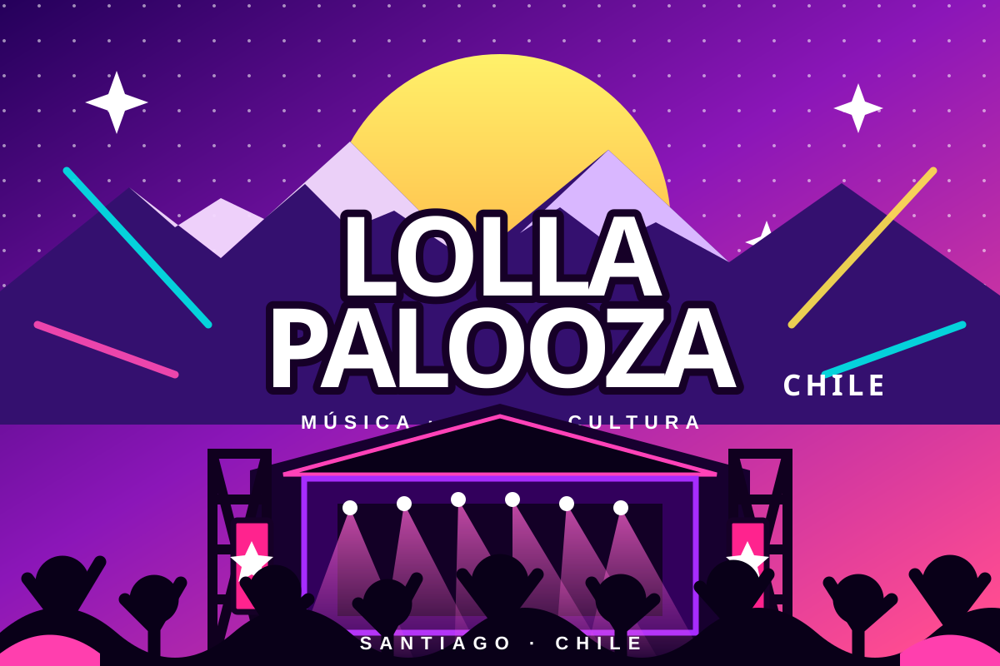
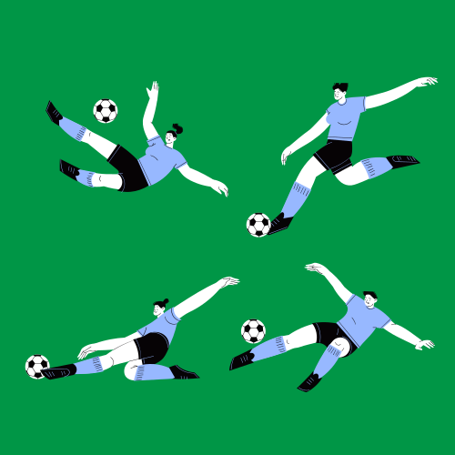
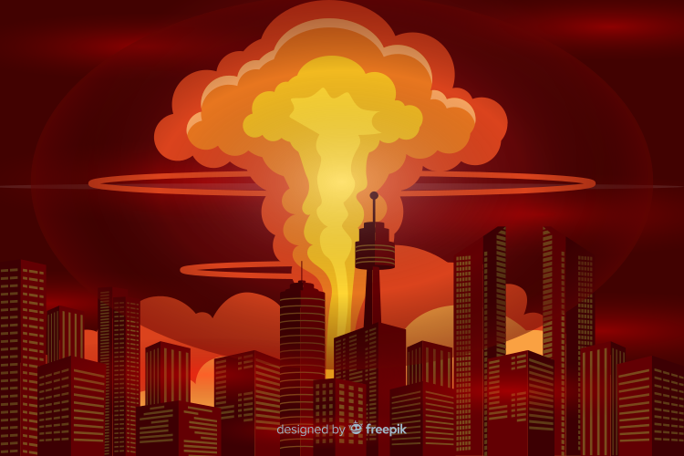
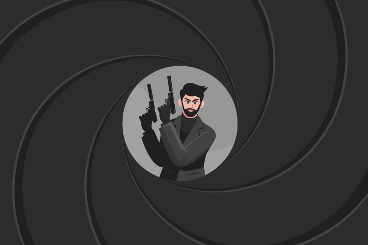

Entretención
Informe en seis temas: música, fútbol, videojuegos y cine. Elige uno.
Lollapalooza Chile: música y una experiencia increíble
Por Naya

Lollapalooza Chile se ha consolidado como uno de los festivales de música más importantes de Latinoamérica, reuniendo cada año a miles de personas en torno a una experiencia que combina música en vivo, arte, cultura y entretenimiento. Desde su primera edición en el país, en 2011, el evento ha convocado a destacados artistas nacionales e internacionales de distintos géneros musicales, convirtiéndose en un punto de encuentro para distintas generaciones de fanáticos.
El festival se caracteriza por ofrecer una programación diversa que abarca estilos como el rock, pop, hip-hop, electrónica e indie, distribuidos en diferentes escenarios donde se presentan artistas consagrados y nuevas promesas de la industria musical. Esta variedad permite que el público descubra nuevas propuestas, disfrute de sus bandas favoritas y participe de una experiencia que va más allá de los conciertos tradicionales.
Uno de los elementos más representativos de Lollapalooza es la puesta en escena de sus espectáculos. Los escenarios cuentan con grandes estructuras, pantallas, iluminación y efectos audiovisuales que acompañan las presentaciones, creando una atmósfera de energía y conexión entre los artistas y el público. A esto se suman espacios dedicados al arte, la gastronomía, las actividades recreativas y distintas iniciativas culturales que complementan la experiencia de los asistentes.
A lo largo de sus ediciones, Lollapalooza Chile ha logrado posicionarse como una plataforma relevante para la industria musical, impulsando la presencia de artistas emergentes y fortaleciendo el vínculo entre el público chileno y la escena internacional. Asimismo, su realización representa un importante movimiento para el sector del entretenimiento, convocando a trabajadores, productores, emprendedores y servicios asociados a la organización de grandes eventos.
Más allá de su cartel musical, Lollapalooza representa un espacio de encuentro donde la música se transforma en una experiencia colectiva. La masiva participación del público, la diversidad de propuestas artísticas y el ambiente festivo convierten cada edición en una celebración cultural que trasciende los escenarios, reafirmando la importancia de los festivales musicales dentro del panorama cultural chileno.
Respira Festival
Por Consuelo
Vuelve la experiencia Open Air más esperada de la temporada
El próximo sábado 21 y domingo 22 de noviembre, Respira Festival regresa con su esperada edición Primavera Open Air 2026 en Espacio Riesco (Huechuraba, Santiago). Durante dos jornadas consecutivas, miles de fanáticos de la electrónica extrema se darán cita para vibrar con un line-up de primer nivel.
La cartelera de este año destaca por cruces históricos y debuts esperados en el país, encabezados por figuras como I Hate Models, Angerfist B2B HARDKAR (Reinier Zonneveld), 999999999, NIKOLINA, Restricted, 6EJOU, Cloudy, Parfait B2B Franck y Viezeasbak, entre muchos otros. Con producción de alto calibre y una atmósfera rave inigualable desde el mediodía, es la cita obligada para dar la bienvenida al verano al ritmo de los BPM más altos.
Colo-Colo campeón de la 35
Por Bryan

Colo Colo conquistó su estrella número 35 en el fútbol chileno tras consagrarse campeón de la Liga de Primera. El Cacique aseguró el título de manera anticipada al vencer por 2-1 a Ñublense en Chillán, gracias a un agónico gol de Marcos Bolados en los descuentos. Bajo la dirección técnica de Fernando «Tano» Ortiz, el cuadro albo firmó una campaña sumamente sólida —liderando gran parte del torneo y amparándose en actuaciones determinantes de referentes como Arturo Vidal y el aporte goleador de Javier Correa— para estirar aún más su palmarés como el club más ganador del país y festejar una nueva corona junto a su gente.
El título de la estrella 35 representó un hito de consistencia y jerarquía para Colo Colo, consolidando un proceso que supo combinar la experiencia de sus históricos con el hambre de gloria de las nuevas figuras del plantel. A lo largo de las treinta fechas, el equipo mostró una notable regularidad tanto en el Estadio Monumental como de visita, destacando por una defensa sólida y una ofensiva contundente que supo resolver partidos cerrados en los momentos clave del campeonato.
La jornada de la consagración en el Estadio Nelson Oyarzún de Chillán quedó marcada por el dramatismo propio de las grandes gestas albas: tras un encuentro trabado ante Ñublense, el gol agónico de Marcos Bolados en tiempo añadido desató la euforia de la parcialidad colocolina, sellando la vuelta olímpica con antelación y reafirmando la hegemonía indiscutida del «Eterno Campeón» en la historia del fútbol profesional chileno.
El camino hacia esta nueva corona estuvo cimentado en la solidez táctica impuesta por el cuerpo técnico, que logró dotar al equipo de una identidad competitiva capaz de adaptarse a distintos escenarios. El mediocampo se erigió como el verdadero motor del conjunto popular, combinando despliegue físico, recuperación rápida y una salida limpia que alimentó constantemente a los extremos y delanteros. Además, el rendimiento superlativo de la columna vertebral del plantel permitió superar baches futbolísticos y lesiones puntuales, manteniendo siempre una ventaja psicológica sobre sus perseguidores directos en la recta final.
Más allá de los números y la tabla de posiciones, la obtención de la estrella 35 desató una celebración multitudinaria que se extendió desde las tribunas del sur hasta cada rincón del país, culminando con una fiesta inolvidable en un Estadio Monumental repleto. Este campeonato no solo amplió la brecha histórica frente a sus clásicos rivales, sino que también reafirmó el vínculo inquebrantable entre el equipo y su hinchada, proyectando al Cacique con renovada confianza hacia los desafíos internacionales de la siguiente temporada.
Grand Theft Auto VI
Por Fredy

El lanzamiento de Grand Theft Auto VI (GTA VI) marca el regreso de Rockstar Games a la franquicia trece años después del estreno de GTA V. Tras un largo ciclo de desarrollo y dos retrasos oficiales respecto a sus ventanas iniciales, el título tiene fijada su salida mundial para el jueves 19 de noviembre de 2026.
Fechas, horarios y proceso de precarga
- Desbloqueo escalonado El acceso al juego se habilita a las 00:00 horas (medianoche) del 19 de noviembre según el horario local de cada región. Debido a los husos horarios, Nueva Zelanda será el primer país en poder jugarlo, varias horas antes que Europa y América.
- Precarga activa Desde el 10 de noviembre de 2026 está habilitada la descarga anticipada para quienes hayan reservado el título en tiendas digitales o adquirido la caja física con código. Los archivos permanecen cifrados hasta la hora exacta de estreno.
- Peso en disco La instalación requiere 212 GB de espacio libre en consola, convirtiéndose en una de las producciones más pesadas de la generación.
Plataformas, ediciones y precios
En su día de estreno, GTA VI estará disponible exclusivamente en consolas de actual generación: PlayStation 5 y Xbox Series X|S (incluyendo soporte de transmisión mediante Xbox Cloud Gaming desde el lanzamiento). Rockstar Games aún no ha anunciado oficialmente una versión para PC, la cual se espera para una fecha posterior.
| Edición | Precio estimado | Contenido principal |
|---|---|---|
| Standard Edition | 79,99 € / $79,99 USD | Juego base. En formato físico no incluye disco, sino un código de descarga y un póster (el mapa físico se vende por separado en la tienda de Rockstar). |
| Ultimate Edition* | 99,99 € / $99,99 USD | Juego base junto con bonificaciones digitales adicionales y contenido extra de lanzamiento. |
Ambientación, historia y jugabilidad
- El estado de Leonida La aventura abandona el tono ochentero de entregas anteriores para presentar una Vice City contemporánea, inspirada en Miami, integrada dentro de un mapa mucho más amplio que recrea todo el estado ficticio de Leonida (basado en Florida), abarcando zonas urbanas, playas, pantanos y cayos.
- Dúo protagonista La narrativa sigue una dinámica criminal al estilo Bonnie y Clyde protagonizada por Lucía Caminos —la primera mujer en liderar una entrega principal de la saga, quien comienza su historia saliendo de la penitenciaría estatal— y su compañero Jason Duval.
- Escala y duración Según declaraciones de la dirección de Rockstar North, completar la campaña principal toma alrededor de 80 horas, sin contar actividades secundarias ni exploración libre. Además, el juego debuta inicialmente centrado en su experiencia para un jugador, ya que la compañía aún no ha detallado la fecha de estreno de su vertiente multijugador
Agente 007
Por Fabi
El Agente 007: Anatomía del mito, la elegancia y el espionaje internacional

Con el código 007 y una letal “licencia para matar” que le precede en cada misión, James Bond se ha consolidado a lo largo de las décadas como el espía más famoso, influyente y perdurable de la historia del cine y la literatura. Creado en 1953 por el novelista británico Ian Fleming en su obra Casino Royale, el personaje trascendió las páginas impresas para convertirse en un fenómeno cultural global y el arquetipo absoluto del héroe de acción moderno.
Lejos de ser un simple agente encubierto, Bond representa una compleja contradicción: un caballero sofisticado con modales impecables en los círculos más exclusivos de la alta sociedad, pero dotado de una frialdad táctica implacable y una brutalidad calculada cuando la seguridad internacional está en juego.
Los pilares fundamentales del universo Bond
Para comprender el atractivo perdurable de 007 en cualquier sitio web, reseña o portal temático, es necesario desglosar los elementos que componen su inconfundible identidad:
- Sofisticación y Alta Costura Ya sea vistiendo un esmoquin estructurado por los mejores sastres de Savile Row en un casino de Mónaco, o un traje ligero de lino bajo el sol abrasador del Caribe, Bond nunca pierde la compostura. Su imagen es sinónimo de distinción, buen gusto y una estética atemporal que define el lujo masculino.
- El arsenal y la tecnología de Q Respaldado por el departamento técnico del MI6, 007 cuenta habitualmente con los dispositivos más sofisticados del mundo —relojes con láser, plumas explosivas y sistemas de rastreo—, herramientas diseñadas para sacarlo de los escenarios más complejos.
- La extensión de su personalidad (Los vehículos) Ninguna discusión sobre el agente secreto está completa sin mencionar al legendario Aston Martin (como el icónico DB5), equipado con placas de matrícula cambiantes, artilugios defensivos y una potencia arrolladora que forma parte de la mitología del cine de acción.
- Los rituales clásicos Desde su emblemática e innegociable preferencia por el vodka martini “agitado, no revuelto” hasta su debilidad por las cartas, los relojes de lujo y su relación simbiótica con superiores y aliados como M, Moneypenny y Q.
Una evolución generacional sin perder la esencia
A lo largo de más de seis décadas y con la interpretación de múltiples actores legendarios (desde Sean Connery y Roger Moore hasta Daniel Craig), la saga de James Bond ha sabido reinventarse. Ha transitado desde la tensión geopolítica de la Guerra Fría hasta las amenazas cibernéticas globales del siglo XXI, adaptándose a los cambios sociales sin perder jamás ese núcleo de misterio, peligro y elegancia que cautiva a millones de espectadores en todo el mundo.
¿Por qué fascina tanto al público actual?
El atractivo de 007 reside en el escapismo definitivo. Nos invita a un universo donde el peligro acecha en cada esquina, los villanos son megalómanos inolvidables, las chicas Bond combinan inteligencia y belleza, y las misiones se resuelven con una mezcla perfecta de ingenio, agilidad mental y una dosis justa de ironía británica. Es la personificación de la fantasía de libertad y control en medio del caos mundial.
Los juegos del hambre: Amanecer en la cosecha
Reseña de Lucía Pacheco
Los juegos del hambre: Amanecer en la cosecha, escrita por Suzanne Collins, es una novela que pertenece a la famosa saga de Los juegos del hambre. La historia se desarrolla en Panem, 24 años antes de los acontecimientos de Katniss Everdeen, y se centra en Haymitch Abernathy durante los 50.º Juegos del Hambre, conocidos como el Segundo Vasallaje de los Veinticinco.
En esta historia, Haymitch es seleccionado para participar en unos juegos mucho más crueles de lo habitual, donde debe enfrentarse a otros jóvenes en una competencia en la que solo uno puede sobrevivir. A medida que avanza la historia, se muestran las injusticias cometidas por el Capitolio, la desigualdad entre los distritos y el sufrimiento de las personas que viven bajo un gobierno autoritario.
La novela destaca temas como la supervivencia, la valentía, la injusticia social, el abuso de poder y la rebelión. Además, permite comprender mejor el pasado de Haymitch y las experiencias que marcaron su vida. Uno de los aspectos más interesantes es cómo muestra que los Juegos del Hambre no son solamente una competencia, sino también una forma de controlar y atemorizar a toda una población.
En mi opinión, es una historia interesante y emocionante porque permite conocer más sobre el universo de Panem y comprender por qué sus personajes son como son. También deja una reflexión importante sobre la libertad, los derechos humanos y la importancia de no quedarse en silencio frente a las injusticias.
En conclusión, Amanecer en la cosecha es una novela que combina emoción, suspenso y crítica social. Su mensaje principal es que el poder no debería utilizarse para controlar ni destruir la vida de las personas, y que siempre es importante luchar por la justicia y la libertad.
Video
Por Maitte Ferrada
Antes y después
Por Alondra
Dos afiches de Los Juegos del Hambre. Mueve la barra para pasar de uno a otro.
Antes: The Hunger Games.
Después: Los Juegos del Hambre: Amanecer en la cosecha.